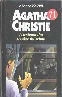

A Testemunha Ocular do Crime
4.50 from Paddington
Os criminosos deveriam tomar cuidado com as velhas senhoras, cujos olhos cansados tudo vêem, e cujas mentes, conhecedoras da natureza humana, podem supor as piores intenções por trás da mais inocente aparência. O assassino deste romance cai na besteira de estrangular uma mulher em um trem enquanto é observado discretamente pela velha senhora Macgillicuddy. Mas o azar do estrangulador não termina aí, porque a senhora Macgillicuddy é amiga da solteirona Miss Marple, uma simpática Poirot de saias, tão sagaz quanto o grande detetive belga.